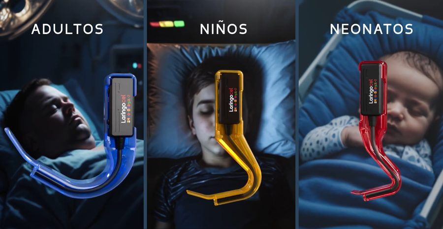

NC2022/0010319
PATENTEPATENTE - LARINGOCEL
DISPOSITIVO DE VISUALIZACIÓN GLÓTICA EN TIEMPO REAL PARA INTUBACIÓN OROTRAQUEAL, QUE FUNCIONA A TRAVÉS DE CÁMARAS CON TRANSFERENCIA DE DATOS VÍA WIFI.
- Inventor
- Carlos Calderón – Tronical S.A.S
- Sector
- SALUD
- Página Web
- Abrir enlace ↗
- Contacto
- 📞 3154714920📞 3214059600